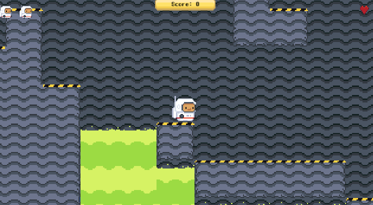
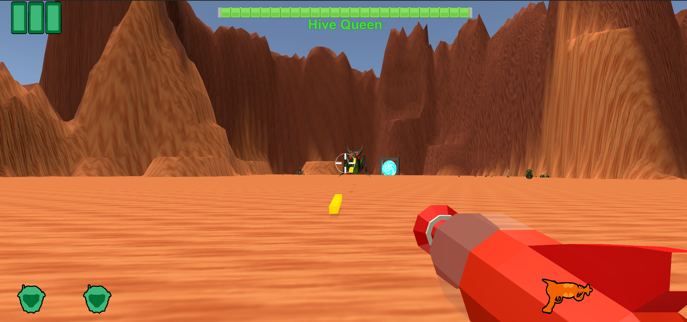
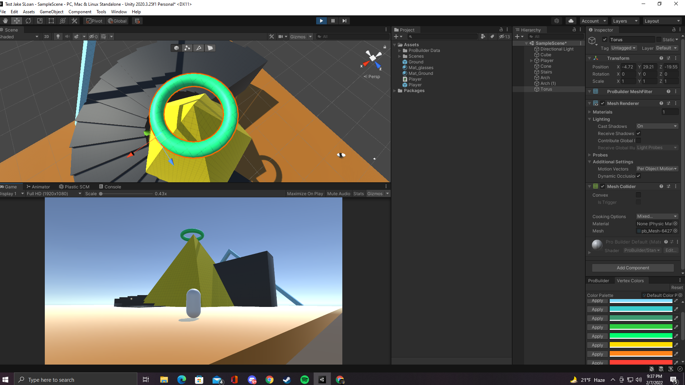

Over the years, I have worked on several different games through different courses at Michigan State University. I have predominatly worked with the software Unity. Unity is a game engine that allows for creating, artistry, and devolopment of whatever your brain can imagine. As long as you are able to make it, the engine will allow you to do so.
This is a one of the first games that I had worked on at Michigan State. This game is a platformer style game. The art assets and code had been given to us, as this was a starter course for game development. This was a great introduction to the world of game building. Professor Brian Winn taught this class and it was very helpful for getting hands on experience with game development.

This was the final project from the course with Professor Brian Winn. This was a shooter that I developed. The code and art assets were provided. All we had to do was put the pieces together and make it all work.

This was another course that I took through Michigan State. This class was taught by Professor Jeremy Bond. This is a screenshot of me learning different tools in the Unity game engine. In this instance, I was learning how to use the Pro-builder tool.

After graduation, I intend on taking certification courses from Unity. I think this will really help me get a leg up on the competition. I really like what I have learned so far at this Univeristy, and I intend on continuing down this path. I think that it will be a really fun path to go down and I cannot wait to see where this journey ends up taking me. I intend to update this website with other projects I work in in the future so stay tuned!